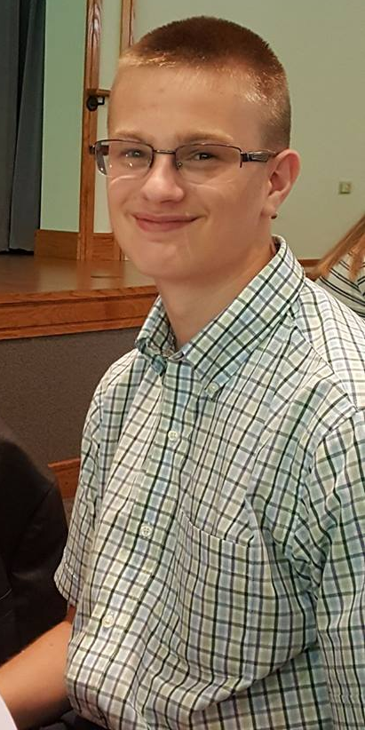

Teen Bible Thoughts
Author

Caleb Horton (scoutchorton)
My name is Caleb Horton and I am the developer/author of this site.
As a typical teenager, I enjoy video games, music, friends, other games, and most things that teenagers enjoy. What sets me apart from the rest of the crowd most of the time is because I also enjoy more nerdy things. For example, I have a constantly growing Rubik's cube collection (and yes, I can solve them all, and most of them from memory), the amount of bands I enjoy can be can be counted on one hand, I am a computer programer (which should be obvious), and have grown up in a sheltered, Christian household.
As a Christian teenager in a public high school, I do try to stand up for my faith. At times, my public speaking and outgoingness fades away when people deny my religion, but I do stand my ground and never plan to walk away from my faith.
I have grown up in a Pentacostal, Assembly of God church in my hometown, and have been going there nearly my entire life. Through the many prayers of those in my life, I am still on the path of being a Christian, and want to make a difference in the world around me. With this blog, it allows me to type what I feel, and not have to think about who will see it, how they will react, and what people will think of me. Those things are what can go through someone's head as they witness to someone in the real world, but on here, those thoughts are able to escape my mind.
I hope this blog personally will affect you, and show you why it is great to be a believer and follower fo the one and only Jesus Christ.